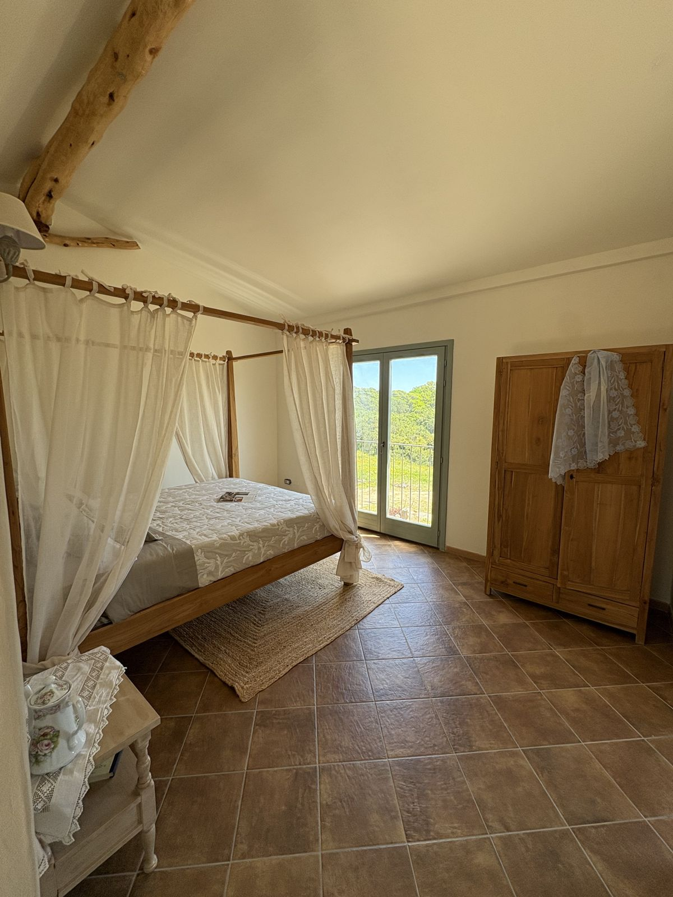
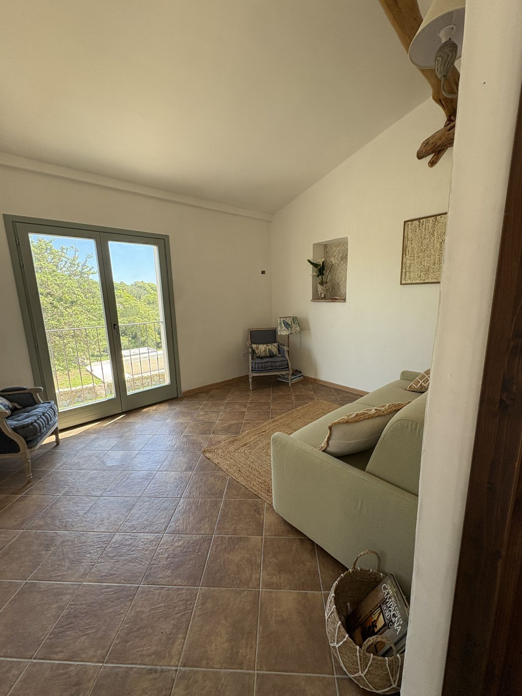

Die Suite
Suite Ginestra
Das größte Zimmer des Hauses: sichtbare Holzbalken, ein Himmelbett mit Leinenvorhängen, eine kleine Sitzecke mit Sofa und eine große Fenstertür mit Blick auf die Landschaft der Gallura.
Verfügbarkeit anfragen